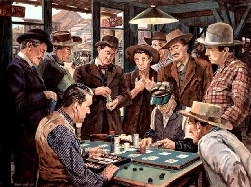

The game of Texas Hold 'Em Poker is true to its name, as it was created some time in the early 20th century in the State of Texas, however, it's unknown exactly when and where the game was created. It's mostly agreed upon that the game was birthed in the town of Robstown (Black Hawk Casinos and Resorts, 2023). There are some objections that the game was formed in the town of Robstown, and that the time period was the early 20th century.
Anthony Holden, an English writer, has been quoted as saying “There's no evidence beyond this eyebrow-raising document that Texas Hold 'em dates back to the early 1900s,” Holden confirms, “and nothing but 'tradition' to suggest the first hand was dealt in… Robstown,” a city Holden relevantly points out wasn't even founded until 1906 (Harris, 2022).

What a game of poker may have looked like around its birth